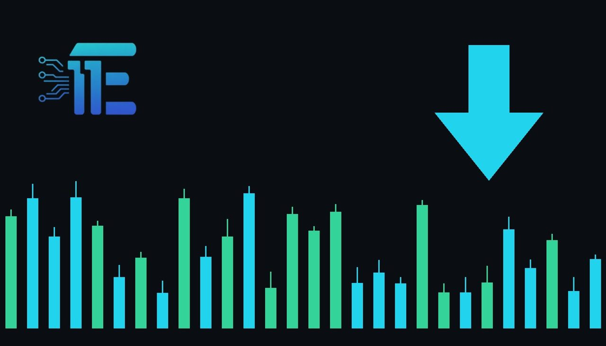

US Jobless Claims Fall to 194,000, Near Multi-Decade Lowsពាក្យស្នើសុំប្រាក់ឧបត្ថម្ភអ្នកអត់ការងារធ្វើនៅអាមេរិកធ្លាក់ចុះដល់ 194,000 ជិតកម្រិតទាបបំផុតជាប្រវត្តិសាស្ត្រ
XAU/USD impact: ▼ Bearishផលប៉ះពាល់លើ XAU/USD: ▼ ធ្លាក់

US initial unemployment claims dropped to a seasonally adjusted 194,000, remaining near levels unseen since the 1960s. A resilient labor market supports the US dollar and bond yields, creating downward pressure on gold.
ពាក្យស្នើសុំប្រាក់ឧបត្ថម្ភអ្នកអត់ការងារធ្វើដំបូងនៅសហរដ្ឋអាមេរិកបានធ្លាក់ចុះមកត្រឹម 194,000 នាក់ ដោយស្ថិតនៅជិតកម្រិតទាបបំផុតមិនធ្លាប់មានតាំងពីទសវត្សរ៍ឆ្នាំ 1960។ ភាពរឹងមាំនៃទីផ្សារការងារនេះគាំទ្រដល់ប្រាក់ដុល្លារអាមេរិក និងផលប័ត្រប័ណ្ណបំណុល ដែលដាក់សម្ពាធធ្លាក់ចុះលើតម្លៃមាស។
New economic data shows that initial filings for unemployment insurance in the United States slipped to a seasonally adjusted 194,000. This development leaves weekly jobless claims hovering near their lowest marks since the 1960s, reflecting an ongoing environment where employer layoffs remain unusually subdued across the country.
ទិន្នន័យថ្មីបានបង្ហាញថា ពាក្យស្នើសុំប្រាក់ឧបត្ថម្ភអ្នកអត់ការងារធ្វើដំបូងនៅសហរដ្ឋអាមេរិកបានធ្លាក់ចុះមកត្រឹមចំនួន 194,000 នាក់។ ការវិវត្តនេះបានធ្វើឱ្យចំនួនអ្នកស្នើសុំប្រចាំសប្តាហ៍បន្តស្ថិតនៅក្បែរកម្រិតទាបបំផុតមិនធ្លាប់មានគិតចាប់តាំងពីទសវត្សរ៍ឆ្នាំ 1960 មក ដែលឆ្លុះបញ្ចាំងពីស្ថានភាពបច្ចុប្បន្នដែលនិយោជកនៅតែមានការកាត់បន្ថយបុគ្គលិកតិចតួចបំផុត។
For gold traders, labor market health serves as a critical indicator for broader monetary policy and macroeconomic direction. When unemployment filings decline toward historic lows, it signals persistent tightness in the workforce, potentially sustaining economic momentum. In response, market participants often adjust their outlook for the Fed, anticipating that central bank officials will feel less urgency to ease monetary policy or may maintain higher interest rates for longer.
សម្រាប់អ្នកជួញដូរមាស ស្ថានភាពសុខភាពនៃទីផ្សារការងារដើរតួជាសូចនាករយ៉ាងសំខាន់សម្រាប់ការកំណត់ទិសដៅគោលនយោបាយរូបិយវត្ថុ និងសេដ្ឋកិច្ចទូទៅ។ នៅពេលដែលតួលេខនៃការស្នើសុំប្រាក់ឧបត្ថម្ភការងារធ្លាក់ចុះមកក្បែរកម្រិតទាបជាប្រវត្តិសាស្ត្របែបនេះ វាបង្ហាញពីភាពរឹងមាំជាបន្តបន្ទាប់នៃកម្លាំងពលកម្ម ដែលអាចជួយទ្រទ្រង់កំណើនសេដ្ឋកិច្ច។ ជាលទ្ធផល អ្នកចូលរួមក្នុងទីផ្សារច្រើនតែផ្លាស់ប្តូរការរំពឹងទុករបស់ពួកគេចំពោះ Fed ដោយរំពឹងថាធនាគារកណ្តាលនឹងមិនសូវប្រញាប់ប្រញាល់ក្នុងការបន្ធូរបបន្ថយគោលនយោបាយរូបិយវត្ថុ ឬអាចរក្សាអត្រាការប្រាក់ឱ្យនៅកម្រិតខ្ពស់ក្នុងរយៈពេលយូរជាងមុន។
This policy backdrop influences XAU/USD primarily through the US dollar and sovereign bond yields. Higher expected interest rates tend to strengthen the greenback and elevate yields on fixed-income securities. Because gold generates no coupon or dividend yield, higher interest rates raise the opportunity cost of allocating capital into precious metals, thereby applying downward pressure on bullion prices.
បរិបទគោលនយោបាយនេះជះឥទ្ធិពលដល់ XAU/USD តាមរយៈប្រាក់ដុល្លារអាមេរិក និងផលប័ត្រប័ណ្ណបំណុលរដ្ឋាភិបាល។ ការរំពឹងទុកនៃអត្រាការប្រាក់កាន់តែខ្ពស់ ជួយពង្រឹងតម្លៃប្រាក់ USD និងបង្កើនផលប័ត្រលើឧបករណ៍ហិរញ្ញវត្ថុដែលមានចំណូលថេរ។ ដោយសារតែមាសមិនផ្តល់អត្រាការប្រាក់ ឬភាគលាភ ការកើនឡើងនៃអត្រាការប្រាក់បានបង្កើនថ្លៃដើមឱកាសនៃការកាន់កាប់លោហៈធាតុមានតម្លៃ ដែលជាហេតុនាំឱ្យមានសម្ពាធធ្លាក់ចុះលើតម្លៃមាស។
Looking ahead, market dynamics for gold will depend heavily on whether subsequent economic reports confirm continued labor strength. If upcoming data demonstrates ongoing employment stability, gold may struggle against firm Treasury yields and a resilient currency. Conversely, if future indicators reveal emerging cracks in the labor market, shifting expectations toward rate cuts could reignite demand for gold. Traders will closely monitor upcoming macroeconomic releases, currency shifts, and Fed communications.
នៅពេលខាងមុខ ស្ថានភាពទីផ្សារមាសនឹងអាស្រ័យយ៉ាងខ្លាំងទៅលើថាតើរបាយការណ៍សេដ្ឋកិច្ចបន្តបន្ទាប់នឹងបញ្ជាក់ពីភាពរឹងមាំនៃទីផ្សារការងារនេះបន្ថែមទៀតឬយ៉ាងណា។ ប្រសិនបើតួលេខខាងមុខនៅតែបង្ហាញពីស្ថិរភាពការងារដ៏រឹងមាំ មាសអាចនឹងបន្តជួបការលំបាកប្រឈមមុខនឹងផលប័ត្រប័ណ្ណបំណុល និងរូបិយប័ណ្ណដ៏រឹងមាំ។ ផ្ទុយទៅវិញ ប្រសិនបើសូចនាករនាពេលអនាគតបង្ហាញពីភាពទន់ខ្សោយនៅក្នុងទីផ្សារការងារ ការរំពឹងទុកនៃការកាត់បន្ថយអត្រាការប្រាក់អាចនឹងងើបឡើងវិញ ហើយជួយជំរុញតម្រូវការមាស។ អ្នកជួញដូរនឹងតាមដានយ៉ាងយកចិត្តទុកដាក់លើទិន្នន័យម៉ាក្រូសេដ្ឋកិច្ច ការប្រែប្រួលរូបិយប័ណ្ណ និងសេចក្តីថ្លែងការណ៍របស់ Fed។
Key takeawaysចំណុចសំខាន់ៗ
- Initial US unemployment claims fell to a seasonally adjusted 194,000, pointing to continued low layoffs.
- ពាក្យស្នើសុំប្រាក់ឧបត្ថម្ភអ្នកអត់ការងារធ្វើដំបូងនៅអាមេរិកបានធ្លាក់ចុះមកត្រឹម 194,000 នាក់ ដែលបង្ហាញពីការបន្តមានការបញ្ឈប់បុគ្គលិកក្នុងកម្រិតទាប។
- Sturdy labor conditions can reinforce expectations for restrictive Fed interest rates and a firmer USD.
- លក្ខខណ្ឌទីផ្សារការងារដ៏រឹងមាំអាចបង្កើនការរំពឹងទុកថានឹងមានអត្រាការប្រាក់ខ្ពស់ពី Fed និងពង្រឹងកម្លាំងប្រាក់ដុល្លារអាមេរិក។
- Stronger economic data tends to weigh on non-yielding bullion, while any sudden labor weakening could provide support.
- ទិន្នន័យសេដ្ឋកិច្ចដែលរឹងមាំជាទូទៅដាក់សម្ពាធលើលោហៈមាសដែលគ្មានការប្រាក់ ខណៈដែលការចុះខ្សោយនៃទីផ្សារការងារអាចផ្តល់ការគាំទ្រដល់តម្លៃឡើងវិញ។
Original commentary by THE MARKET CODE, based on public reporting from Economy. Written with the help of AI. Educational only, not financial advice.
មតិវិភាគដើមដោយ THE MARKET CODE ផ្អែកលើការរាយការណ៍សាធារណៈពី Economy។ សរសេរដោយមានជំនួយពី AI។ មាតិកាអប់រំប៉ុណ្ណោះ មិនមែនជាដំបូន្មានហិរញ្ញវត្ថុទេ។